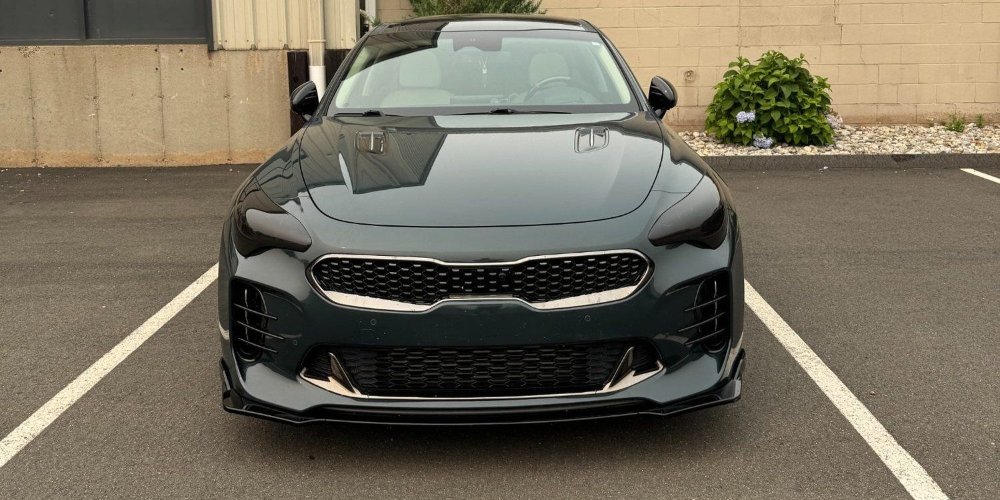
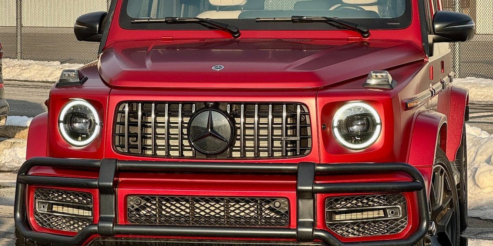

Partial-Front PPF
Leading edge of the hood and fenders, front bumper and mirrors. The most common impact zones, at the lowest cost of entry.
↗Self-healing urethane film applied to the panels that take the most abuse. Choose partial-front, full-front or full-body coverage in clear gloss or stealth satin.
Paint protection film is a clear thermoplastic urethane layer bonded to your paint. It absorbs impacts that would otherwise chip the finish, and light scratches in the film itself self-heal with heat.
Highway driving is the main reason people install PPF. Sand, stone and road debris thrown up by traffic hit the front bumper, hood edge, mirrors and A-pillars hardest. Once a chip goes through the clear coat and into the base, the only real fix is refinishing that panel.
PPF sits on top of the paint and takes those hits instead. The film is thick enough to absorb stone impacts and elastic enough that fine swirls and scratches disappear when warmed by the sun or a heat gun.
Coverage is a choice, not a fixed package. Partial-front covers the leading portion of the hood and fenders plus the bumper and mirrors. Full-front extends the film across the entire hood and fenders, which eliminates the visible cut line across the hood. Full-body wraps every painted panel.
Film is also available in a stealth satin finish that converts gloss paint to a matte appearance while protecting it, and it is fully reversible if you ever want the gloss back.
Coverage is chosen around how you drive and what you want protected.
Leading edge of the hood and fenders, front bumper and mirrors. The most common impact zones, at the lowest cost of entry.
↗Entire hood, both full fenders, front bumper, mirrors and headlights. No cut line across the hood and no visible edge from the front.
↗Every painted panel wrapped, including doors, quarters, roof and rear. Maximum protection for new, rare or high-value vehicles.
↗The same protection with a satin finish that converts gloss paint to matte. Fully reversible, unlike a satin repaint.
↗Door cups, door edges, rocker panels, rear-bumper loading ledge, A-pillars and the roof leading edge. Small pieces that prevent common damage.
↗Ceramic coating applied over PPF adds hydrophobic behavior and makes both the film and exposed paint easier to keep clean.
↗Film bonds to what is under it. Contaminated or defective paint traps debris beneath the surface permanently. Panels are decontaminated and corrected first, edges are wrapped where the panel allows it, and the vehicle rests indoors while the adhesive cures so the film does not lift at the edges later.
We look at the vehicle, discuss how you drive and recommend coverage that matches. Existing paint condition is assessed.
Panels are washed, decontaminated and corrected as needed, because anything left under the film stays there.
Film is cut and installed to your vehicle's panels with edges wrapped where the panel allows for a clean, invisible finish.
The vehicle rests indoors while the adhesive cures, then every edge and seam is inspected before pickup.
Looking for a PPF shop near North Haven, CT? Exclusive Auto Lab installs partial-front, full-front and full-body paint protection film in clear gloss or stealth satin for new vehicles, leases, daily drivers and enthusiast builds.
PPF pairs well with ceramic coating and window tint. Many owners protect a new vehicle with all three at once, before the first highway trip puts chips in the bumper.
Serving North Haven, New Haven, Hamden, Wallingford, Cheshire, Branford, East Haven, West Haven, Meriden and surrounding Connecticut communities.
Quality film with a professional install typically lasts several years and often longer with normal maintenance. Lifespan depends on climate, sun exposure, washing habits and how much highway driving the vehicle sees.
Yes. Film is designed to be removable and, when installed on healthy factory paint and removed correctly, the paint underneath comes out in the same condition it went in.
No, and they solve different problems. PPF is a physical layer that absorbs rock chips and scratches. Ceramic coating is a chemical layer that adds gloss, water beading and easier cleaning but does not stop stone impacts. Many owners install both.
Fine swirls and light surface scratches in the film close up with heat, from sunlight or from warm water. Deeper cuts that go through the film do not heal and would need that section replaced.
That is the ideal time. Factory paint is undamaged, so there is nothing to correct first, and protection is on the car before the first highway trip starts chipping the bumper and hood edge.
Generally it is not recommended. Film adhesive is designed to bond to paint, and installing over vinyl can lift the wrap on removal. If you want both, PPF goes on the paint and the wrap decision is made separately.
Reference images showing the kind of work involved. Follow our Instagram for current jobs coming through the shop.



Call, text photos, or request an appointment online. We will tell you what to expect before you bring the vehicle in.